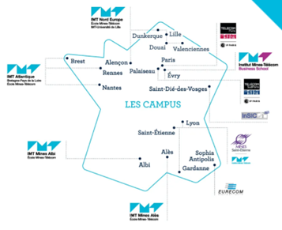
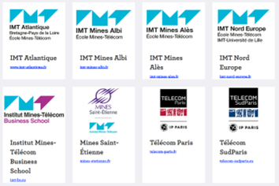
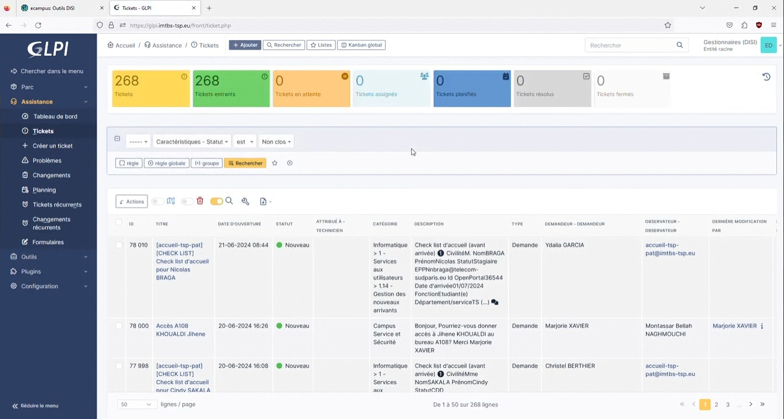
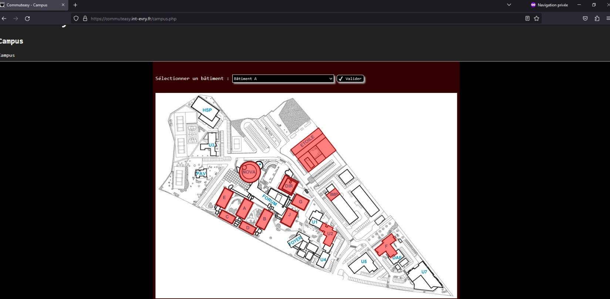
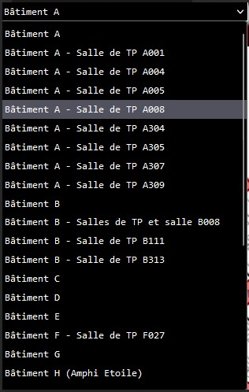

Stage : Institut Mines-Télécom Business School et Télécom Sud Paris
Stage au département DISI (Direction Informatique et Systèmes)
Présentation de l’établissement :
L'Institut Mines-Télécom Business School (IMT-BS) et Télécom SudParis (TSP) sont deux établissements publics d’enseignement supérieur situés à Évry-Courcouronnes. Ils sont reconnus pour leur excellence dans les domaines du management, du commerce, de l'ingénierie et de la recherche.
Une alliance entre deux écoles :
Télécom Sud-Paris
Spécialité : Grande école d'ingénieurs dans les domaines de l'informatique, des télécommunications et des technologies numériques.
Objectifs : Former des ingénieurs experts en technologies, réseaux et systèmes.
Chiffres clés :
- 1 302 étudiants
- 374 personnels
- Environ 150 doctorants
- Partenariat stratégique : Co-fondatrice de l’Institut Polytechnique de Paris avec avec l'École Polytechnique, Télécom Paris, l’ENSTA Paris et l’ENSAE Paris.
Institut Mines-Télécom Business School
Spécialité : Grande école de commerce et de management, orientée vers la transformation numérique.
Objectifs : Former des managers et entrepreneurs responsables.
Chiffres clés :
- 1 124 étudiants
- 180 personnels
- Accréditations AACSB et AMBA.
Groupe Institut Mines-Télécom
Les deux écoles font partie du groupe Institut Mines-Télécom, qui regroupe huit grandes écoles publiques et deux écoles filiales.
  La fiche d'entreprise des deux écolesMes missions pendant le stage
- Gestion des tickets GLPI pour les personnels 
- Service de support dans l'helpdesk
- Déploiement d'OS Windows 11 via PXE (boot réseau)
- Réseau de baie, changement de switch
- Utilisation du logiciel Commuteasy pour gérer les switches  
- Projet d’étude de couverture Wi-Fi de l’établissement avec le logiciel Acrylic Wi-Fi